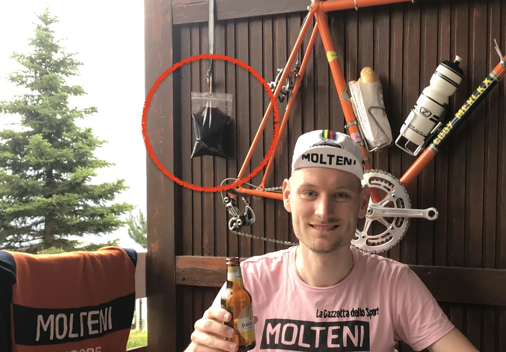
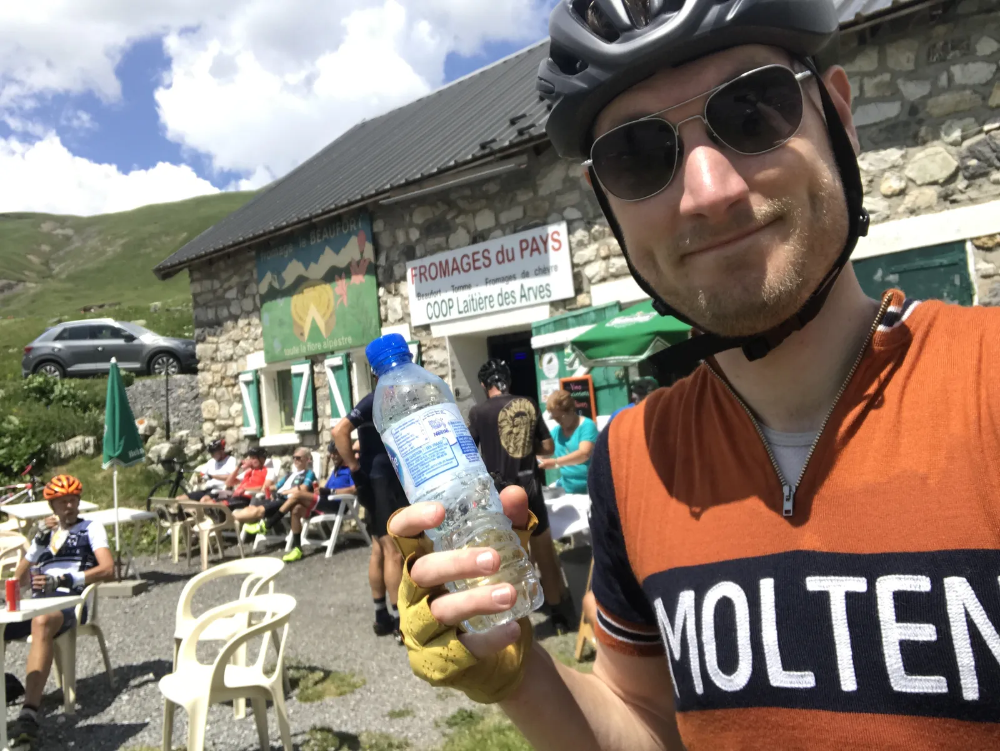
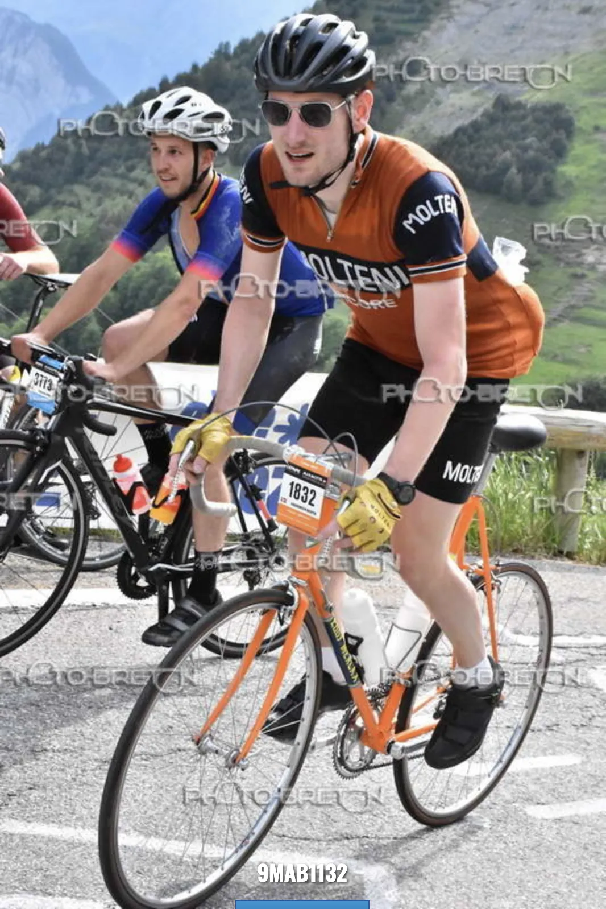
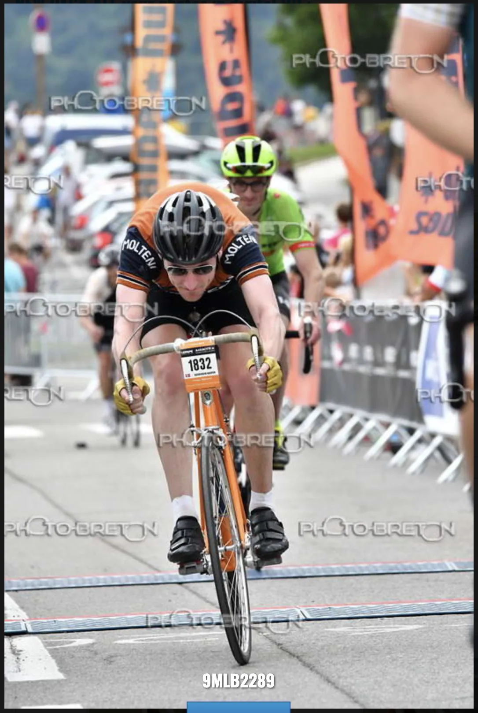
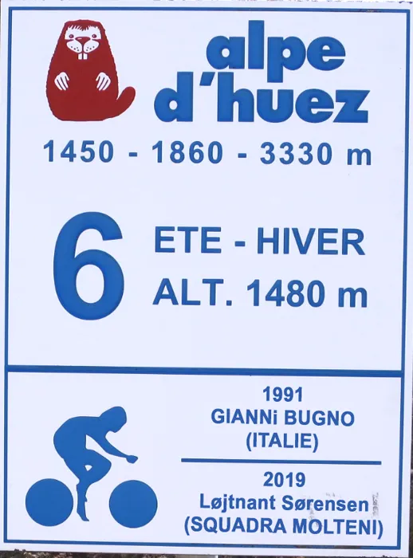
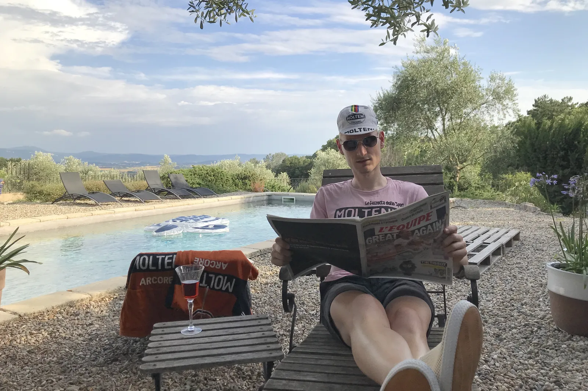

Fra La Marmotte-kiks til sejr på l’Alpe d’Huez – Løjtnanten får sit navn i sving 6

Løjtnantens navn står nu på skiltet i sving 6 – lige under vinderen fra 1991, Gianni Bugno. La Marmotte 2019 startede og sluttede forfærdeligt for løjtnant Sørensen, der kørte efter sejren i den prestigefyldte bjergløb.
En amatørfejl var skyld i han kom for sent til starten, og dehydrering og kramper satte en stopper for den samlede sejr. Til gengæld kørte han så hurtigt på l’Alpe d’Huez, at borgmesteren belønnede indsatsen med en plaque i sving 6 med løjtnantens navn.
Byttede blod med vin
Vinterens blodpose var klar og sprængfyldt med krudt. Løjtnanten var alene i alperne, og havde allieret sig med den erfarne Maurice, bedre kendt som Motoman, som skulle hjælpe ham med transfusionen. Men det gik helt galt.
– Maurice den forbandede drukkenbolt, kom lige fra hans bror Francois’ natklub. Han var så stiv, at han tog fejl af min blodpose, og vores bag-in-box vin. Han satte vinposen til kanylen i min vene, og hældte 2 liter dårlig fransk rødvin direkte ind i mine årer, mens han selv sippede af min blodpose, fortæller løjtnanten.

Med rødvinen buldrende i årene, fik Maurice løjtnanten overtalt til at besøge sin brors natklub, hvor de drak tæt hele natten. Løjtnanten kom en time for sent til starten.
Uden vand
En hurtig beslutning om at spare noget vægt, lignede en god ide, men skulle vise sig at blive kostbar senere i løbet.
– Jeg tænkte hurtigt, og tømte min dunk for at spare noget vægt. Det gav lidt tørre læber, da jeg nærmede mig toppen af Glandon, men jeg tænkte ikke mere over det, siger løjtnanten.
Dunken blev fyldt i en kirke på nedkørslen, og så gik det ellers med fuld pedal mod Telegraphe, der blev forceret i et godt tempo.
– Efter Telegraphe havde jeg hentet det meste af feltet, og jeg drønede forbi depotet i Valloire, og startede de sidste små 20 km., op mod Galibier. Det gik rigtig godt, men da jeg lagde an til angreb med 10 kilometer igen, krampede begge ben op, fortæller løjtnanten.
Dehydrering og kramper ruinerede sejrschance
Dr. Porte’s melding var klar, løjtnanten var dehydreret. Den strategiske beslutning om at køre på en dunk, gav bagslag. Der var kun en ting at køre, sætte farten ned, og få fyldt væske på.
– Jeg har desværre ikke kaptajnens læderhud, men en barnehud, der skal fugtes hele tiden. Jeg måtte ind til flere af de små pop-up boder på Galibier og købe vand for dyre domme. Selv hos min gode ven, ostebonden 4 km. fra toppen, måtte jeg skylde Reblochon-osten ned med en liter vand, fortæller en slukøret løjtnant.

På toppen blev der tømt endnu en dunk, og så gik det ellers med 120 km./t. ned af Galibier, som er en af de hurtigste nedkørsler i alperne.
Stålrekord på l’Alpe d’Huez
Nedkørslen gjorde godt for benene, som var restitueret og huden havde fået farve igen, så l’Alpe d’Huez kunne nu forceres for fuld knald.

– Jeg bruger momentum fra nedkørslen, så jeg kommer med godt swung på, og det tager mig de første par kilometer op ad Alpen. Jeg kan mærke benene igen, og med ca. 9 kilometer igen sætter jeg min spurt ind, og kaster min cykel ind over målstregen, da jeg når toppen, fortæller løjtnanten.

Selvom han kommer længe efter at sejrceremonien er overstået, bliver han alligevel budt velkommen af borgmesteren, der har bevidnet hans opkørsel, og kan konstatere at han har slået stålrekorden på l’Alpe d’Huez med tiden 47 minutter og 33 sekunder, så noget godt har der været i den rødvin.
– Jeg slår åbenbart rekorden, og dagen efter har de allerede fået mit navn op i sving 6 under Gianni Bugno, der også kørte Alpen vanvittig hurtigt på en stålcykel. Jeg håber kaptajnen er tilfreds, fortæller løjtnanten.

Afslapning ferie i Provence
Nu står den på afslapning i Provence, hvor løjtnanten er sammen med torta mama, Maria, på to ugers ferie.
– Jeg håber bare ikke kaptajnen får gode idéer. Mont Ventoux ligger lige i baghaven, og han kunne godt finde på at uddele et par strafrunder, hvis det kommer ham for øre, at jeg hat været i byen med Maurice og Francois inden et løb, fortæller løjtnanten off-the-record.

Squadra Molteni kørte sidst La Marmotte i 2016, hvor de tog en stensikker sejr i holdkonkurrencen.
Se en fyldestgørende videorapport fra løbet, som løjtnanten har sendt fra sit eksil i det sydlige Frankrig.